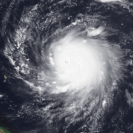
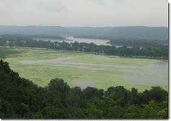

Hurricanes
A 2011 study linked increased activity of intense hurricanes in the North Atlantic with a northward shift and amplification of convective activities from the African easterly waves (AEWs). A 2014 study investigated the response of AEWs to high emissions scenarios, and found increases in regional temperature gradients, convergence and uplift along the Intertropical Front of Africa, resulting in strengthening of the African easterly waves, affecting the climate over West Africa and the larger Atlantic basin.
Studies conducted in 2008 and 2016 looked at the duration of The Atlantic hurricane season, and found it may be getting longer, particular south of 30°N and east of 75°W, or the tendency toward more early- and late-season storms, correlated to warming sea surface temperatures. However, uncertainty is still high, and one study found no trend, another mixed results.
As to 2019, increasing evaporation and the larger capability of the atmosphere to hold water vapor linked to climate change, already increase the amount of rainfall from the hurricanes Katrina, Irma and Maria by 4 to 9 percent and in the future can increase it by up to 30 percent
See also: Atlantic hurricane season, Pacific hurricane season, and Atlantic multidecadal oscillation
Maine
The state of Maine has a long history of coastal management in all forms dating back to the 1960s, which was then eventually codified into written law in 1978 after the "Blizzard of 1978". The state passed various laws to mandate the management and preparation of state authorities to prepare for further natural disasters, including the potential landfalls of future hurricanes. The legislature allocated funds for several state executive agencies to take an active role in the regulation of coastal development and residence. Maine also utilized already allocated federal funds to better manage its coastal areas. These agencies and funds were utilized to take several precautionary measures such as building sand dunes to serve as temporary levees, construction of seawalls to fortify the coast against storm surges and flooding, reforestation of the state to strengthen the soil, and the banning of construction in certain extremely flood-prone areas.
Hurricane Hugo near peak intensity on September 15, 1989
| Most intense Atlantic hurricanes | |||||
|---|---|---|---|---|---|
| Rank | Hurricane | Season | Pressure | ||
| hPa | inHg | ||||
| 1 | Wilma | 2005 | 882 | 26.05 | |
| 2 | Gilbert | 1988 | 888 | 26.23 | |
| 3 | "Labor Day" | 1935 | 892 | 26.34 | |
| 4 | Rita | 2005 | 895 | 26.43 | |
| 5 | Allen | 1980 | 899 | 26.55 | |
| 6 | Camille | 1969 | 900 | 26.58 | |
| 7 | Katrina | 2005 | 902 | 26.64 | |
| 8 | Mitch | 1998 | 905 | 26.73 | |
| 9 | Dean | 2007 | |||
| 10 | Maria | 2017 | 908 | 26.81 | |
| Source: HURDAT | |||||
Harmful Algal Blooms
Scientists predict that climate change will have many effects on freshwater and marine environments. These effects, along with nutrient pollution, might cause harmful algal blooms to occur more often, in more waterbodies and to be more intense. Algal blooms endanger human health, the environment and economies across the United States.
Climate Impacts That Might Affect Algal Blooms:
Warming water temperature
Harmful algae usually bloom during the warm summer season or when water temperatures are warmer than usual. Warmer water due to climate change might favor harmful algae in a number of ways:
- Toxic blue-green algae prefer warmer water.
- Warmer temperatures prevent water from mixing, allowing algae to grow thicker and faster.
- Warmer water is easier for small organisms to move through and allows algae to float to the surface faster.
- Algal blooms absorb sunlight, making water even warmer and promoting more blooms.
Toxic blue-green algae thrive in warm, slow-moving water.
Changes in salinity
Climate change might lead to more droughts, which make freshwater saltier. This can cause marine algae to invade freshwater ecosystems. In the southwestern and south central United States, toxic marine algae have been killing fish in freshwater lakes since 2000.
Higher carbon dioxide levels
Algae need carbon dioxide to survive. Higher levels of carbon dioxide in the air and water can lead to rapid growth of algae, especially toxic blue-green algae that can float to the surface of the water.
Changes in rainfall
Climate change might affect rainfall patterns, leading to alternating periods of drought and intense storms. This can cause more nutrient runoff into waterbodies, feeding more algal blooms.
Sea level rise
Scientists predict that sea level could rise up to one meter by the year 2100. This would create more shallow and stable coastal water, conditions that are perfect for the growth of algae.
Extreme storms followed by periods of drought can lead to more algal blooms like this one seen in Iowa in 2011.
Coastal upwelling
Coastal upwelling is the process by which winds push surface water offshore and deep water moves towards the coast, bringing nutrients from the ocean floor to the surface. Climate change is expected to alter the timing and intensity of coastal upwelling. Along the west coast of the United States, excess nutrients delivered by upwelling might lead to more algal blooms.